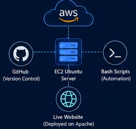

Cloud-Based Linux Server Deployment with GitHub Version Control and Automation
Welcome, Sakshi Hulgunde
Devops Learner | Cloud Explorer | Problem Solver
Institute: ITVedant Batch Code: DRA-501 Project: DevOps Fundamentals
EC2 Instance Status
Running
Ubuntu Server on AWS EC2
Apache2
Active
Web Server is Running
GitHub Repository
Connected
Repo: DevOps-Fundamentals
Server Status
Running
All System Operational
Monitoring Dashboard
CPU Usage
15%Memory Usage
492 MB / 7.6 GB (6%)Disk Usage
40% Used (2.7 GB / 6.7 GB)Running Process
175Logged Users
1UserServer Uptime
17 MinutesAWS Architecture

Cloud Provider : AWS
Service : EC2 Ubuntu
Web Server : Apache2
Version Control : GitHub
Automation : Bash Scripts
Troubleshooting
| Issue | Resolution |
|---|---|
| Apache Stopped | sudo systemctl restart apache2 |
| SSH Failed | Check Security Group Port 22 |
| Website Not Loading | Verify Apache & Port 80 |
| Permission Denied | chmod / chown |
| Git Push Failed | Verify GitHub Credentials |
| Disk Full | Delete Old Logs |
🚀 DevOps Learning Journey
Track Your Learning Progress
Linux
CompletedGit & GitHub
CompletedJenkins
In ProgressDocker
PendingKubernetes
Pending📚 Resources
View All →
☁️ AWS Documentation
>
🐧 Linux Man Pages
>
⚙️ GitHub Docs
>
🚀 DevOps Roadmap
>
💻 Bash Scripting Guide
>
Linux Commands
20 command
25 June 2026AWS EC2
Step by Step Process
04 Jul 2026Jenkins Pipeline Syntax
Pipelines examples
17 Jul 2026